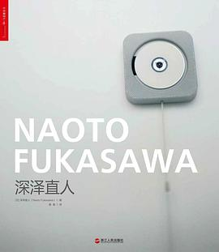

《深泽直人》

总体观点
优秀的设计不是为了彰显设计师个人的张扬个性，而是为了让物品自然地消融于生活环境与人的潜意识行为之中。深泽直人的核心哲学是‘无意识设计’（Without Thought）。
人与周围环境的互动早在思考之前就已经发生。人借由直觉和环境赋予的‘可供性’（Affordance）顺畅生活；设计的真正使命，是捕捉那些人们习以为常却未曾留意的潜意识习惯，将它们翻译为恰如其分的物品轮廓。
从MUJI壁挂式CD播放器到超级平常（Super Normal）的日常器物，最高境界的设计追求‘恰到好处’与‘理所当然’：它看起来毫不起眼，却在使用时让人由衷感叹‘这就对了’。
核心观点
-
1. 无意识设计（Without Thought）：将人们无意识的行动转化为可见之物
人们在日常生活中有很多动作是身体的下意识反应；好的设计应该顺应这些已有肌肉记忆，而不是强迫用户阅读说明书重新学习。
MUJI壁挂CD播放器采用老式排气扇的下拉拉绳开关，人们一看到悬挂的拉绳就会本能地伸手下拉，音乐随即如微风般流淌而出。 -
2. 设计物品的‘轮廓’，本质上是在描摹环境的边界
物品并不是孤立存在的单体，它处在人与环境的缝隙之间。环境的形状决定了物品该有的边缘，顺应环境轮廓的物品才不会造成视觉压迫。
深泽直人设计的雨伞架不是传统的金属桶，而仅仅是在门口玄关地面上开凿一条浅凹槽，正好卡住人们自然靠墙放置的伞尖。 -
3. 超级平常（Super Normal）：超越时尚与新奇的永恒之物
真正经得起时间考验的经典设计往往初看极其平凡，甚至让人觉得‘以前在哪见过’，但经过长时间使用后，你会发现它比任何花哨设计都舒服。
广岛椅（Hiroshima Chair）拥有极其质朴温润的木质线条，看似一张普通木椅，但手工打磨的扶手与腰部贴合弧度让人入座后不想起身。 -
4. 可供性（Affordance）：环境与身体早已达成了隐形契约
借鉴生态心理学家吉布森的理论，物品的形状应当向人散发其功用线索，身体在注视和触摸的瞬间就已经接收到了使用邀请。
带平顶托盘把手的电饭煲，平坦的盖子上刚好留有一个凹槽可以横放饭勺，人们盛完饭本能就会把勺子搁在上面，绝不弄脏台面。 -
5. 适当的克制：追求‘物的八分目’
如同日本养生所说的吃饭八分饱，产品设计也应保持两分克制，消除过度包装与多余功能，以最适度的资源满足人类最核心的日常需要。
±0系列加湿器外形宛如一颗洁白的鹅卵石，仅保留一个旋转开关和柔和指示灯，彻底舍弃炫目的液晶屏和繁复模式选择。 -
6. 察觉到不可察觉的细节是设计的最高洞察
设计师必须具备敏锐的观察力，像一台慢速摄像机一样捕捉人们在喝茶、走路、摸钥匙时那些一闪而过、连当事人自己都没意识到的微小习惯。
设计一款带环形槽的茶包吊牌，茶包泡开后正好可以把滴水的湿茶包收拢压在环内挂在杯沿上，解决喝茶者不知湿茶包往哪放的尴尬。
全书思维导图 · 知识脉络树
全书结构
-
前言：察觉到不可察觉的（Noticing the Unnoticeable）
贾斯珀·莫里森为本书作序，高度赞赏深泽直人捕捉日常潜意识细节的敏锐洞察力与超越新奇的平常设计哲学。
莫里森评析深泽直人如何从日常喝咖啡、等电梯的微动作中提炼灵感，说明平常之中蕴含的惊人美学。 -
第一部分 无意识设计（Without Thought）
系统阐述‘无意识设计’核心概念，通过大量工作坊成果展示身体记忆与直觉行为如何直接转化为产品形态。
展示学员设计的带小托盘的台灯：底座是一个小圆盘，当人们下班回家顺手把钥匙扔进盘子里时，灯光自动感应点亮。 -
第二部分 生态心理学与可供性（Affordance and Design）
结合生态心理学家佐佐木正人的理论，探讨人、物与环境之间的信息共生关系，论证信息存在于环境而非大脑内部。
分析楼梯台阶的高度与人们步幅的天然契合，阐明优秀产品如何像台阶一样，自然向人体身体散发‘请来使用我’的物理线索。 -
第三部分 轮廓与环境（Outline and Context）
剖析物品如何与所处的空间、光线、空气流动产生和谐交融，让物品像一汪水融入容器一样退居环境背景之中。
解析无印良品白色微波炉与烤箱的外观设计：倒角角度严格与厨房橱柜边缘呼应，关机时宛如一块干净的白砖隐于台面。 -
第四部分 超级平常（Super Normal）
深入探讨深泽直人与莫里森联合发起的Super Normal运动，反思当代设计界的浮夸炫技，呼唤回归器物本真的力量。
巡展中展出的普通白瓷马克杯、传统黄铜回形针与极简折叠伞，向观众证明那些经过数十年沉淀未被淘汰的日常物才是设计巅峰。 -
第五部分 具象与细节（Embodiment and Details）
全景解构深泽直人为Maruni、B&B Italia、Magis、KDDI等顶级品牌操刀的数百件代表作的材质、曲面与制造细节。
深度展示INFOBAR手机如同棋盘彩色瓷砖般的平铺键盘设计，以及握在手中如同把玩一块鹅卵石的ISHICORO手感打磨。 -
第六部分 关于深泽直人（Thinking About Naoto Fukasawa）
收录原研哉、蒂姆·布朗（IDEO创始人）、安东尼·格姆雷等多位国际设计与艺术宗师对深泽直人设计思想的深度评述。
原研哉评价深泽直人的设计是在人与事物接触的瞬间擦出火花，精准找到了最微弱却最和谐的平衡点。